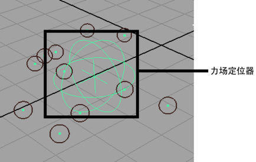

创建“力场”(Force Field)约束以在具有球形体积边界的径向场中推动 nParticle 对象远离约束的中心。
“力场”(Force Field)约束与 Nucleus 对象生成的力场不相关。
创建“力场”(Force Field)约束
- 选择要约束的 nParticle 对象。
- 在 FX 菜单集中，选择
 。
。 - 单击“创建约束”(Create Constraint)或“应用”(Apply)。
“力场”(Force Field)定位器显示在选定 nParticle 对象的中心，dynamicConstraint 节点显示在“属性编辑器”(Attribute Editor)中。
dynamicConstraint 节点上的预设特性确定约束的类型（在这种情况下为“力场”(Force Field)约束）及其行为方式。例如，可以使用以下属性设置创建“力场”(Force Field)约束：
- “弹簧”(Spring)作为“约束方法”(Constraint Method)
- “全部到第一个”(All to First)作为“组件关系”(Component Relation)
- “组件顺序”(Component Order)作为“连接方法”(Connection Method)
- 使用 Maya 的“移动”(Move)、“大小”(Size)和“旋转”(Rotate)工具调整“力场”(Force Field)约束的位置、大小和旋转。
定位器的位置、大小和旋转确定“力场”(Force Field)约束的大小、形状和体积。
- （可选）调整 dynamicConstraint 节点上的“力”(Force)、“强度”(Strength)和“强度衰减”(Strength Dropoff)属性以确定力场的强度。正值会使力场向外推或排斥，负值会使力场吸引 nParticle。